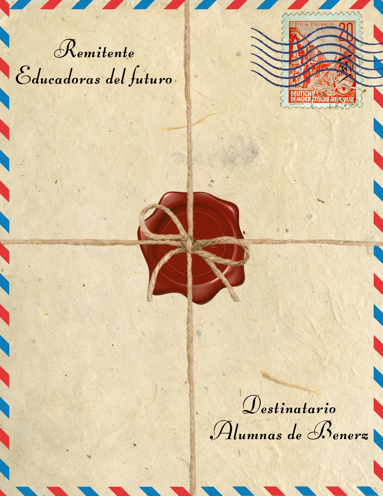
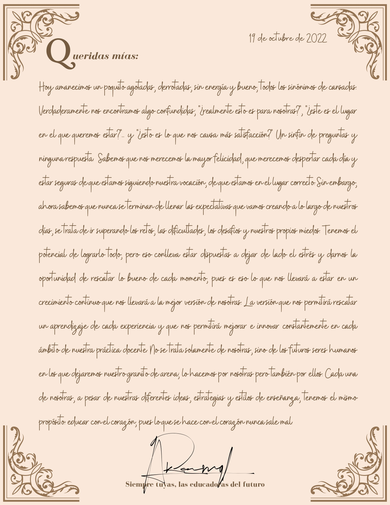
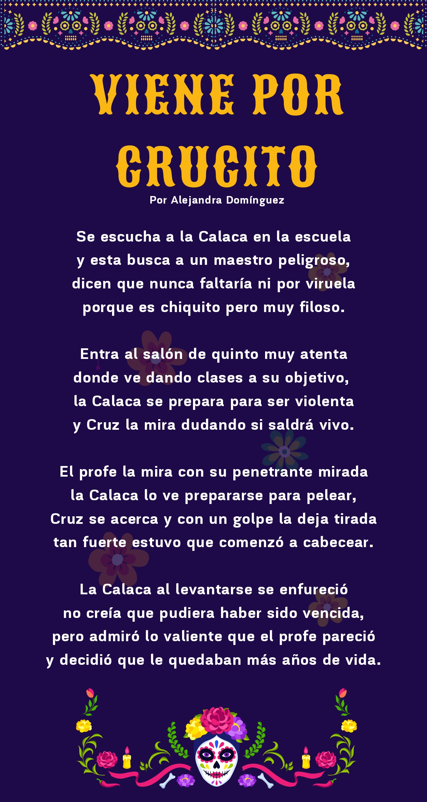
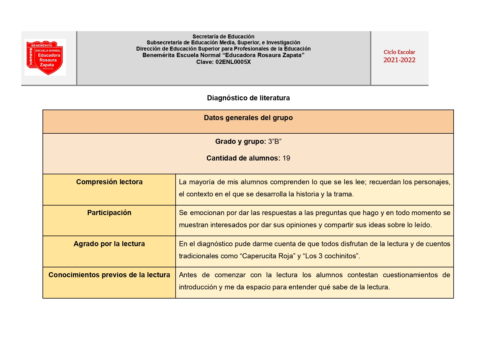

¿Quién soy? Mi nombre es Alejandra, soy una joven alegre, inteligente y muy hacendosa. He tenido una infinidad de pasatiempos y sigo en búsqueda de más experiencias que me apasionen. A continuación, te comparto un pedacito de mi.
¿Quién soy? Mi nombre es Alejandra, soy una joven alegre, inteligente y muy hacendosa. He tenido una infinidad de pasatiempos y sigo en búsqueda de más experiencias que me apasionen. A continuación, te comparto un pedacito de mi.
Desde mis primeros años, la lectura ha sido parte fundamental de mi vida; creo que no podría mencionar algo que considere mío sin mencionar la literatura, pues me la he apropiado por completo. Ha estado para mí en mis mejores, peores, y todavía peores momentos, y gracias a ello he comprobado que no hay nada que un buen libro no pueda curar. A continuación te comparto 4 libros que cambiaron mi vida; unos para bien y bueno, otro no tanto, pero tendrás que leerlos para darte cuenta de cuáles estoy hablando.

Cuenta la historia de Sebastián, quien después de quedar huérfano, queda al cargo de su aventurero tío Paco.
Dónde Comprar
Se centra en la vida de Jack, un escrito y alcohólico en recuperación que acepta un puesto como cuidador fuera de temporada del Hotel Overlook.
Dónde Comprar
La historia de un escritor y otro que se cree todo lo que el escritor escribe.
Dónde ComprarEsta presentación parte del folklore, que se entiende como el conjunto de expresiones culturales tradicionales de un pueblo, por lo que considero importante mantenerlo en cuenta a la hora de implementar literatura en preescolar. Es indispensable no perder el sentido de pertenencia y la tradición que se ha ido creando partiendo de las palabras contadas de una persona a otra, ya sea en cuentos, leyendas, chistes, retahílas y muchas otras.
Comprende los fundamentos de la literatura infantil y relacionar la literatura
actual en la evolución histórica de la producción para niñas y niños a partir del
goce de la lectura como experiencia estética.
A todos nos gustan los finales felices, pero la pregunta es ¿por qué?, ¿de dónde viene la necesidad de ver un final agradable
para todos los involucrados de la historia? Ahí está la respuesta, porque terminamos nosotros también involucrados en ella, nos
sentimos parte de ella y así como a nosotros, también a los personajes les deseamos un buen final. Este trabajo nos muestra
múltiples razones por las cuales los niños disfrutan y buscan un final feliz, es importante considerarlo al momento de escoger
nuestros cuentos, pues hay muchas alternativas con las que nos podemos encontrar en sus finales.

|
Benito Taibo es probablemente uno de los seres humanos más
geniales que hayan pisado este planeta. Con tan sólo 2 libros leídos de él, ya aseguro que es de mis personas
favoritas, lo siento mi mejor amigo, mi aliado y mi “cómplice” (sólo algunos entenderán).
Por eso mismo, qué maravilloso es escucharlo platicar, siento que todas sus palabras van dirigidas hacia mi. |
Esta situación didáctica, titulada “Sueños voladores”, promueve la lectura de poesía en preescolar, una acción que puede volverse complicada, solamente si no se emplea bien. Creo profundamente que los niños tienen la capacidad de entender el mundo como nosotros, y a través de ojos donde reinan la imaginación, la creatividad y el amor por lo nuevo. Es por eso, que esta situación didáctica es un parteaguas para continuar con este tipo de literatura en preescolar. La poesía es tan maravillosa que no debe ser privada para nadie, mucho menos para niños que son completa y absolutamente capaces de comprenderla, sentirla y vivirla.
|
¡Mi primera actividad extraclase! Tuve la oportunidad de ver una película durante el Tour de Cine Francés. Qué bello es el cine francés, y aún cuando hay mil y un géneros por ver, nunca defrauda. El francés es simplemente hermoso, podría escuchar cualquier cosa y para mi seguiría siendo perfecto. La película que escogí fue “TCF Kompromat: El expediente ruso”. La película, que está basada en hechos reales, retrata la historia de la espectacular fuga de un diplomático francés. Víctima de un complot orquestado por los servicios secretos rusos (FSB), Mathieu, quien es director de la Alianza Francesa de Irkutsk, Siberia, es arrestado, encarcelado y aislado. No tiene a quién recurrir. Se da cuenta de que es víctima de un Kompromat: un expediente construido sin bases que busca incriminarlo. Demostrar su inocencia es imposible: la única solución es escapar. Las tomas, la música y el desenlace de la historia son característicos del cine francés; audaces, acertados e imposibles de dejar de ver, escuchar y hasta sentir. La película aunque llega a tornarse un poco lenta, te atrapa en momentos específicos que hacen que apuestes por los protagonistas. Tanto, que hasta te encuentras en una sala de cine con 3 personas diciéndole al protagonista exactamente lo que debería hacer, pero claro, como cualquier película, hace caso omiso. Fue una experiencia muy grata, fue algo nuevo y emocionante. Definitivamente continuaré consumiendo el cine internacional; tiene muchas cosas que ofrecer. |
|
|
|
|
Esta película deja en nosotros una reflexión enorme tanto en el impacto que el arte puede tener en la vida de
los seres humanos como la importancia de que el docente sea un guía que se preocupa genuinamente en el aprendizaje
y desarrollo de sus alumnos. El arte es un medio increíble para explorar y externar lo que hay dentro de nosotros,
tanto en aprendizaje, pensamientos, ideas y sentimientos. El arte es otra herramienta que permite que el aprendizaje
sea creativo, consciente y dinámico. De ahí la importancia de utilizarla en conjunto con otra área o disciplina para
asegurar que el aprendizaje sea óptimo y de mayor interés. No se puede subestimar la manera en la que los docentes
impactan en sus estudiantes, tanto positiva como negativamente. |

|
Comprende los fundamentos de la literatura infantil y relaciona la literatura actual en la evolución histórica de la producción para niñas y niños a partir
del goce de la lectura como experiencia estética.
Esta unidad fue bastante enriquecedora pues fue la introducción hacia el tema de la literatura, tema del que siempre me gusta aprender mucho más.
Disfruté mucho hacer la presentación de ¿Quién soy? pues habían muchos datos de mi que no tenía presente, sobre todo el del papel de la literatura en mi vida.
En esta unidad aprendimos sobre el folclore y su definición, que es el conjunto de expresiones culturales tradicionales de un pueblo, por lo que considero
importante mantenerlo en cuenta a la hora de implementar literatura en preescolar. Esta actividad nos permitió recordar la importancia de no perder el sentido
de pertenencia y la tradición que se ha ido creando partiendo de las palabras contadas de una persona a otra, ya sea en cuentos, leyendas, chistes, retahílas y
muchas otras. También, la presentación ¿Fueron felices y comieron perdices? nos permitió darnos cuenta de las múltiples razones por las cuales los niños disfrutan y
buscan un final feliz, es importante considerarlo al momento de escoger nuestros cuentos, pues hay muchas alternativas con las que nos podemos encontrar en sus
finales. Así mismo, realizamos una cajita de fósforos, donde guardamos nuestras más valiosas pertenencias. Esta actividad me pareció sumamente interesante y
bonita, pues me permitió recordar y agradecer por todo lo que guardo en mi corazón. También nos permitió conocer sobre la poesía y me dio la oportunidad de
implementar una actividad de poesía en mis prácticas. De igual manera, y mi actividad favorita, fue crear un cartel sobre Benito Taibo, uno de mis autores
favoritos. Siempre es una dicha verlo hablar, y en este caso miramos una plática de Ted donde Taibo expone cómo podemos hablar y sentir a partir de los
personajes que leemos, podemos convertirnos en ellos y vivir todas las vidas que no alcanzaremos a vivir. Esta unidad fue excelente y me gustaron muchísimo
las actividades que realizamos y cómo las realizamos, la disfruté bastante.
Nuestra primera jornada de prácticas implicó muchos retos , así que como equipo del Jardín Niño Francisco Márquez, redactamos esta carta exponiendo las dificultades que se nos presentaron, así como un mensaje de aliento tanto para nosotras como para el resto de nuestras compañeras.
|

|

|
Noviembre es conocido mundialmente como el mes de las festividades de Día de Muertos. En México es una celebración de mucha relevancia, en la que son muy populares las llamadas Calaveritas. Nos dimos la tarea de escribir una para algún miembro de la comunidad Benerz, por lo que decidí inspirarme en el maestro Cruz Sánchez para su elaboración.
Durante esta unidad, el grupo de quinto semestre visitamos por cinco días la bonita Guadalajara. Este viaje nos dio nuevos conocimientos, nuevos recuerdos y nuevas experiencias que traemos de regreso y se quedarán con nosotras para siempre. Por lo que hicimos una actividad de nuestra maleta de viajes de estudio , donde recolectamos todo lo intangible que traemos de Guadalajara.
Esta situación didáctica, titulada “Y Colorín Colorado”, promueve la lectura y creatividad para idear un final apropiado a un cuento. Tiene como propósito que comprendan de qué trata la historia y la personalidad de sus personajes y con base en dicha información, creen un final coherente.
 Esta revista es increíble, abarca muchos temas relacionados con las conspiraciones y los detalla de manera muy
puntual. Hubo 3 temas que captaron más mi atención y me parece interesante compartir.

|
|
Es una serie de televisión canadiense basada en la obra clásica de literatura infantil de Lucy Maud Montgomery de 1908 Ana la de Tejas Verdes pero
introduciendo numerosos cambios en el argumento.
Anne Shirly es una niña huérfana de 13 años que vive con muchos cuestionamientos y una particular e
intensa personalidad, intelecto e imaginación. Su vida cambia después de ser enviada por error a vivir con dos hermanos mayores. La primera vez que la
vi fue una dicha enorme para mi corazón, habló de todos los temas relevantes de nuestra generación aún cuando está ambientada en la década de 1890, lo
que muestra una realidad muy cercana a cómo estos temas impactaron esa época y la importancia que siguen teniendo en la actualidad. Es una serie bella
en toda la extensión de la palabra, desde el desarrollo de la historia y de los personajes, sobre todo de Anne, el cómo comienza como una niña con la
ilusión de transformar su vida, y la manera en la que logra conseguirlo mediante muchas experiencias que la van formando. Habla de temas como la orfandad,
el abandono infantil, el trauma psicológico, problemas sociales como la presión por la conformidad, la desigualdad de género, la religión, la libertad de
expresión, machismo, racismo, estándares de belleza, acoso sexual, historia indígena, derechos LGBTQ+ y los inicios del empoderamiento de la mujer. Aborda
cada uno de estos temas de una manera tan real, tan congruente y tan bien detallada. Es sin duda una serie que vale cada segundo de ver.
Anne with an E es sin duda una de las mejores series que he visto en mi vida. He aprendido a opinar libremente; a no tener miedo de ocupar espacio porque
soy una mujer fuerte, decidida y ejemplar, con mucho que decir; a luchar por las injusticias y no quedarme callada cuando algo no me parezca correcto;
a aceptar a los demás y no intentar cambiarlos, pues todos aportamos mucho al ser únicos, porque aprendí que ser diferente no es una abominación; a aceptar
y darle la bienvenida a los cambios, porque siempre hay que agradecer por todo lo que podemos aprender de los cambios; a leer, a leer y a leer, a estar más
informada, más consciente y más presente de la literatura que me rodea, a apreciar los buenos libros que me dejan sin palabras y que llegan al corazón y
a amar libremente y no tener miedo de ser quién soy. Esta serie es una oportunidad de redefinirse y transformarse, antes de ver la serie se es una persona,
y se termina siendo alguien completamente nuevo.
Antes de visitar la FIL, nos dimos la tarea de investigar sobre las ferias del libro, un poco de su historia y de su importancia.
A continuación se muestra la evaluación de la FIL, qué nos pareció, a qué eventos ingresamos y cómo calificamos la experiencia, además de algunas fotos.
Utiliza algunas perspectivas críticas sobre la literatura infantil a partir de análisis comparativos y recuperación de experiencias propias con diferentes
textos infantiles para la valoración y selección de textos dirigidos a niñas y niños del nivel preescolar que coadyuven a desarrollar su competencia literaria.
Comenzamos esta unidad en el mes de noviembre, lo que nos llevó a conocer sobre las calaveritas y tuvimos la oportunidad de realizar una, lo que disfruté mucho
porque siempre me han gustado mucho las festividades del Día de Muertos, así que me gustó mucho realizar la calaverita inspirada en el profesor Cruz Sánchez.
También aprendimos sobre las habilidades lectoras de los niños, cómo se manifiestan y cómo atenderlas. En esta unidad tuvimos la oportunidad de ir a la FIL
Guadalajara, dónde conocí a Benito Taibo y a Ashley Frangie, pude observar distintos espectáculos y talleres en la FIL Niños y estuve presente en una presentación
de baile. Fue un viaje tan enriquecedor que me hizo crecer en muchos ámbitos, desde la literatura por la variedad de libros y exposiciones en la FIL, la historia
por los recorridos en el centro histórico, perspectiva diferente sobre la Educación Especial por la visita al CRIT y autonomía al estar en una ciudad nueva con
mis amigas. Llegando, realizamos nuestra maleta de viajes de estudio, lo que me hizo darme cuenta de lo mucho que me traje de regreso, no sólo recuerdos sino
también nuevas ideas y maneras de ver la vida. Esta unidad me gustó mucho y leí mucho más, aún cuando fue muy corta por los eventos del aniversario de la BENERZ,
la semana del paro laboral, la semana de práctica y el viaje a la FIL. Sin embargo, me encantó esta unidad, siento que adquirí muchos conocimientos no sólo en
teoría sino en práctica, lo que lo hace mucho más valioso.